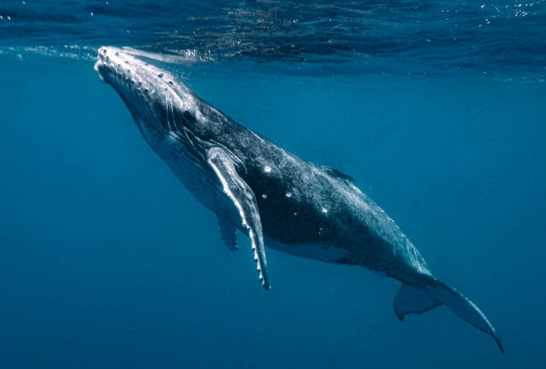

Ballena Jorobada
La ballena jorobada (Megaptera novaeangliae) es una especie de cetáceo con aletas pectorales largas y un canto distintivo.
Características
- Pueden medir entre 12 y 16 metros de longitud.
- Se caracterizan por sus saltos espectaculares fuera del agua.
- Poseen un canto único que usan para comunicarse.
Imagen

Volver a la página principal